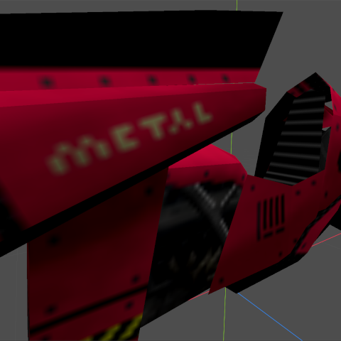
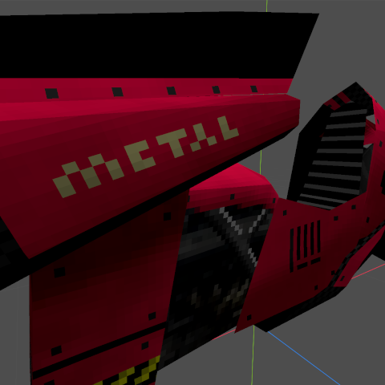

Texturing is the process of applying a 2D image to a 3D model to give it color. This section describes the approach I took for texturing the 3D assets on this site.
There are countless techniques and styles used to texture 3D models. For this project, I wanted to try to replicate the video game ULTRAKILL's textures. It's most distinctive features are it's low(er) resolution textures and lack of texturing filtering.
ULTRAKILL uses


TESTING TESTING